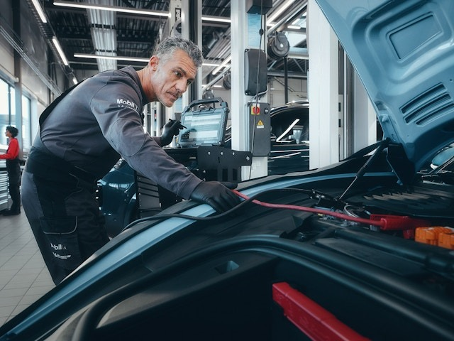
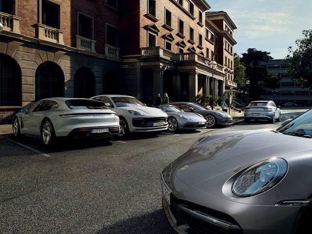

The Porsche crest stands for outstanding technical expertise, sports car performance, pride and commitment. For the pride of those who develop and construct Porsche vehicles. For the commitment of our service and maintenance technicians.
The driving force behind our actions.
We can look back on a long history in sports car development. We use highly specialised tools and technology from Porsche. We continuously train our employees in the latest knowledge to ensure we maintain your vehicle in accordance with our standards and your expectations.

Service offering
Service & Maintenance
From servicing and maintenance to expert repair, we take complete care of your Porsche. And through consultation with your Service Advisor in the Direct Dialogue Bay, we take care of your concerns too.
The perfect collaboration of all components, along with the warranty and vehicle information, ensures a unique and safe driving experience in a high-performance sports car. With Porsche Genuine Parts, tyres from selected partners, and the right oil, your vehicle will perform better for longer, and maintain its value.
Every new and Approved Porsche comes with a warranty that you can extend to up to 15 years of peace of mind. Porsche Assistance provides worldwide breakdown cover (Europe-only for Porsche Approved).
Using the downloads available here, you can apply for various registration-relevant documents and vehicle documentation and download technical vehicle information.
Further information

Whatever you need to know about your Porsche, we make it easy.
For example, you can find out more about how our vehicles' exhaust emissions are tested according to the EU WLTP test procedure. We are committed to sustainable efficiency, and we provide full information about Porsche end-of-life vehicle return. Our workshops adhere to the Registration, Evaluation, Authorisation and Restriction of Chemicals (REACH) regulation, and you can find out how it affects any individual Porsche car part. We also provide online Technical Service Information for independent workshops.